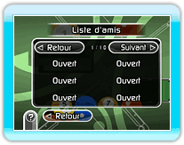
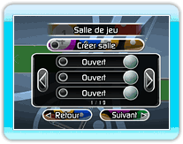
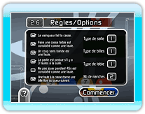

Vous pouvez jouer à une partie connexion Wi-Fi Nintendo en vous connectant à la connexion Wi-Fi Nintendo.
Une fois que vous avez réussi à vous connecter via le connexion Wi-Fi Nintendo, sélectionnez le type de partie depuis le menu. Vous pouvez jouer à une partie 2 joueurs ou 4 joueurs.
● À propos des parties connexion Wi-Fi Nintendo
Presser  n'affichera pas le menu pause.
n'affichera pas le menu pause.
Presser  n'affichera pas le menu HOME.
n'affichera pas le menu HOME.
● Codes amis et liste d'amis
Vous ne pouvez pas jouer avec un ami si celui-ci n'est pas enregistré sur votre liste d'amis. Donnez votre code ami, affiché à l'écran liste d'amis, pour que vos amis puissent vous enregistrer. Vous pouvez aussi effacer les codes amis de votre liste d'amis. Attention ! Vous ne pourrez pas jouer avec les amis dont vous avez effacé le code ami.

● Jouer avec des amis
Vous pouvez jouer à une partie avec un ami enregistré sur votre liste d'amis. Vous ne pourrez pas jouer avec un ami qui est enregistré sur votre liste d'amis si celui-ci est déconnecté de la connexion Wi-Fi Nintendo ou a effacé votre code ami de sa liste d'amis.
● Jouer à des parties mondiales
Vous pouvez rivaliser avec les joueurs du monde entier. Votre adversaire sera automatiquement sélectionné.

● Règles
Vous ne pouvez pas changer les règles de jeu pendant une partie connexion Wi-Fi Nintendo. De plus, chaque joueur possède une certaine limite de temps pour jouer lors de son tour. Si vous ne faites pas de coup durant le temps imparti, il y a faute et c'est au tour du joueur suivant.